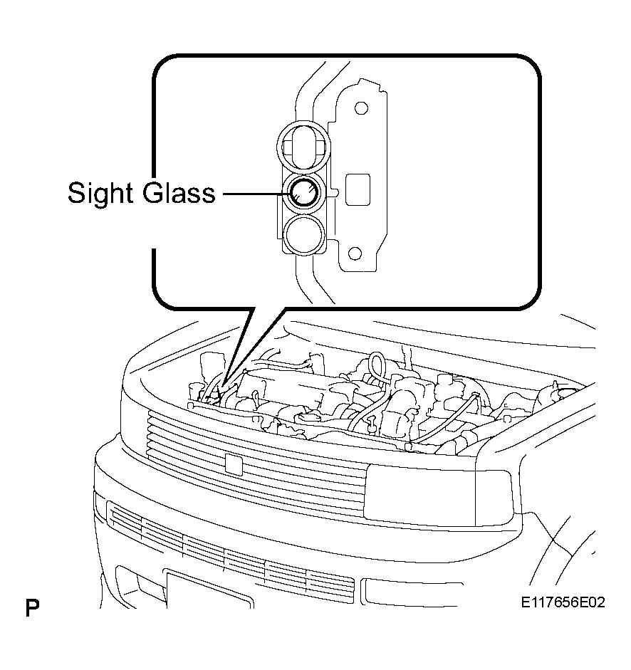
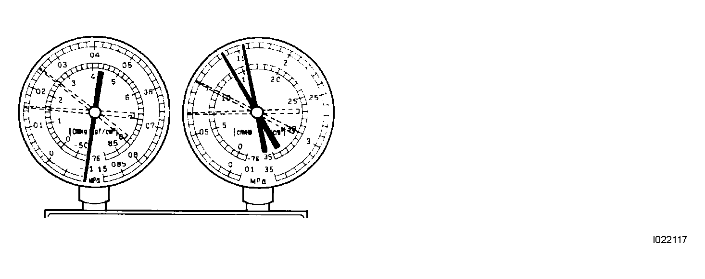
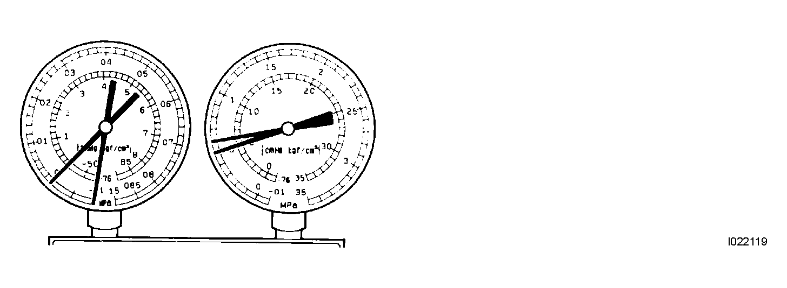
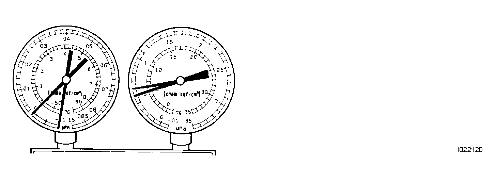
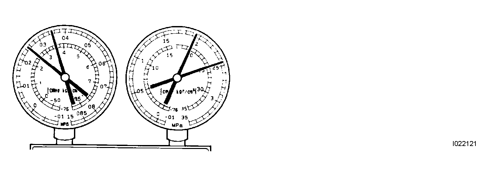
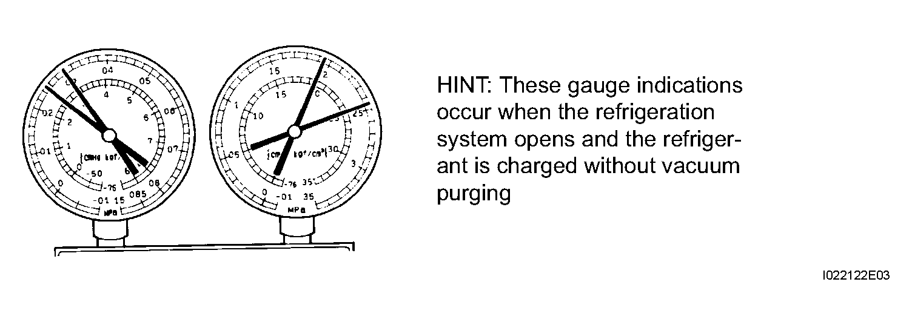
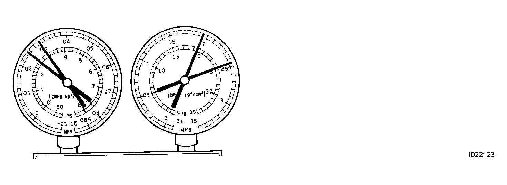
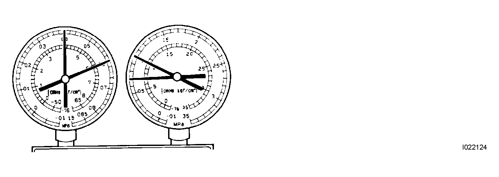

On-Vehicle Inspection
- INSPECT REFRIGERANT VOLUME
- Check the sight glass on the liquid tube.
Test conditions:
- Engine is running at 1,500 rpm.
- Blower switch is at HI.
- A/C switch is ON.
- Temperature control switch is at the MAX. COOL position.
- Doors are fully open.

Courtesy of © TOYOTA, LICENSE AGREEMENT TMS1002ITEM SYMPTOM CHARTItem Symptom Amount of Refrigerant Corrective Procedures 1 Bubbles visible Insufficient* - Check for gas leakage with gas leak detector and repair if necessary
- Add refrigerant until bubbles disappear
2 No bubbles visible Empty, insufficient or too much Refer to items 3 and 4 3 No temperature difference between compressor inlet and outlet Empty or nearly empty - Check for gas leakage with gas leak detector and repair if necessary
- Add refrigerant until bubbles disappear
4 Considerable temperature difference between compressor inlet and outlet Correct or too much Refer to items 5 and 6 5 Immediately after A/C is turned OFF, refrigerant becomes clear Too much - Drain or discharge refrigerant
- Bleed air and supply proper amount of purified refrigerant
6 Immediately after A/C is turned OFF, refrigerant foams and then becomes clear Correct - HINT:
*: If the ambient temperature is higher than usual but cooling is sufficient, bubbles in the sight glass are permissible.
- Check the sight glass on the liquid tube.
- INSPECT REFRIGERANT PRESSURE WITH MANIFOLD GAUGE SET
- This method uses a manifold gauge set to locate problem areas. Read the manifold gauge pressure when the following conditions are established:
- Temperature at the air inlet is 30 to 35°C (86 to 95°F).
- Engine is running at 1,500 rpm.
- All doors are fully open.
- Blower switch is at HI.
- Temperature control switch is at MAX. COOL.
- A/C switch is ON.
Gauge readings (reference)
- If the refrigeration system is functioning normally, the gauge readings are as shown in the table below.
Gauge reading
GAUGE READINGPressure Side Refrigerant Volume Low 0.15 to 0.25 MPa (1.5 to 2.5 kgf/cm2 ) High 1.37 to 1.57 MPa (14 to 16 kgf/cm2 ) - The A/C system periodically changes between normal and improper function due to moisture in the refrigeration system.
Fig 4: Inspecting Refrigerant Pressure With Manifold Gauge Set (Moisture Present In Refrigeration System)

Courtesy of © TOYOTA, LICENSE AGREEMENT TMS1002SYMPTOM AND POSSIBLE CAUSE CHARTSymptoms Probable Cause Diagnosis Corrective Actions During operation, pressure on low-pressure side cycles between normal and vacuum Moisture in refrigeration system freezes at expansion valve orifice, causing temporary stop of cycle. However, when melted, normal state is restored. - Dryer is overly saturated
- Moisture in refrigeration system freezes at expansion valve orifice and blocks refrigerant circulation
- Replace cooler dryer
- Remove moisture from cycle by repeatedly evacuating air
- Supply appropriate volume of new refrigerant
- The A/C system does not function effectively due to insufficient cooling.SYMPTOM AND POSSIBLE CAUSE CHART
Symptoms Probable Cause Diagnosis Corrective Actions - Pressure low on both low and high-pressure sides
- Cooling performance insufficient
Gas leakage from refrigeration system - insufficient refrigerant
- Refrigerant leakage
- Check for gas leakage and repair if necessary
- Supply appropriate volume of new refrigerant
- If indicated pressure value is close to 0 when connected to gauge, create vacuum after inspecting and repairing location of leakage
- The A/C system does not function effectively due to poor circulation of the refrigerant.

Courtesy of © TOYOTA, LICENSE AGREEMENT TMS1002SYMPTOM AND POSSIBLE CAUSE CHARTSymptoms Probable Cause Diagnosis Corrective Actions - Pressure low on both low and high-pressure sides
- Frost exists on piping from condenser to A/C unit
Refrigerant flow obstructed by dirt in condenser Condenser clogged Replace condenser - The A/C system functions intermittently because the refrigerant does not circulate.

Courtesy of © TOYOTA, LICENSE AGREEMENT TMS1002SYMPTOM AND POSSIBLE CAUSE CHARTSymptoms Probable Cause Diagnosis Corrective Actions - Vacuum indicated on low-pressure side, and extremely low pressure indicated on high-pressure side
- Frost or condensation seen on piping on both sides of condenser or expansion valve
- Refrigerant flow obstructed by moisture or dirt in refrigeration system
- Refrigerant flow obstructed by gas leakage from expansion valve
Refrigerant does not circulate - Check expansion valve
- Clean expansion valve by blowing air
- Replace condenser
- Evacuate air and charge appropriate volume of new refrigerant
- For gas leakage from expansion valve, replace expansion valve
- The A/C system does not function effectively due to overcharged refrigerant or insufficient cooling of the condenser.

Courtesy of © TOYOTA, LICENSE AGREEMENT TMS1002SYMPTOM AND POSSIBLE CAUSE CHARTSymptoms Probable Cause Diagnosis Corrective Actions Pressure extremely high on both low and high-pressure sides - Excessive refrigerant
- Cooling performance of condenser insufficient
- Condenser is dirty
- Condenser fan motor is malfunctioning
- Excessive refrigerant
- Clean condenser
- Check condenser fan motor operation
- If 1 and 2 are normal, check amount of refrigerant and supply appropriate volume of refrigerant
- The A/C system does not function due to air in the refrigeration system.CAUTION: The low-pressure piping may be very hot and cause serious burns.Fig 9: Inspecting Refrigerant Pressure With Manifold Gauge Set (Air Present In Refrigeration System)

Courtesy of © TOYOTA, LICENSE AGREEMENT TMS1002SYMPTOM AND POSSIBLE CAUSE CHARTSymptoms Probable Cause Diagnosis Corrective Actions - Pressure extremely high on both low and high-pressure sides
- Low-pressure piping is too hot to touch
Air in refrigeration system - Air in refrigeration system
- Vacuum purging insufficient
- Check if compressor oil is dirty or insufficient
- Evacuate air and charge new refrigerant
- The A/C system does not function effectively due to an expansion valve malfunction.

Courtesy of © TOYOTA, LICENSE AGREEMENT TMS1002SYMPTOM AND POSSIBLE CAUSE CHARTSymptoms Probable Cause Diagnosis Corrective Actions - Pressure extremely high on both low and high-pressure sides
- Frost or condensation on piping on low-pressure side
Problem with expansion valve - Excessive refrigerant in low pressure piping
- Expansion valve too wide open
Replace expansion valve - The A/C system does not function due to a defective compressor.

Courtesy of © TOYOTA, LICENSE AGREEMENT TMS1002SYMPTOM AND POSSIBLE CAUSE CHARTSymptoms Probable Cause Diagnosis Corrective Actions - Pressure extremely high on both low and high-pressure sides
- Pressure extremely low on highpressure side
Internal leakage in compressor - Compression failure
- Leakage from damaged valve or broken sliding parts
Repair or replace compressor
- This method uses a manifold gauge set to locate problem areas. Read the manifold gauge pressure when the following conditions are established: